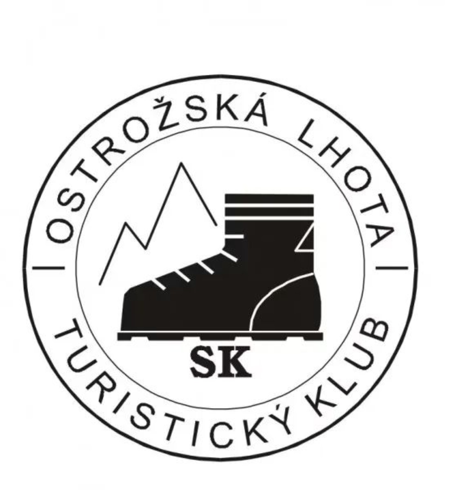

Program připravujeme
Nové termíny akcí se zde zobrazí po jejich zveřejnění klubem.


Společné výšlapy, cyklovýlety, poznávání nových míst a péče o turistické stezky. Vítejte na zkušebním webu našeho klubu.
Poznat naši činnost →Přehled nejbližších výletů, společných setkání a brigád. Aktuální termíny bude vedení klubu průběžně doplňovat.
Nové termíny akcí se zde zobrazí po jejich zveřejnění klubem.
Turistický klub působí v Ostrožské Lhotě a zve k poznávání okolní krajiny, místních tradic i společných výletů.
Informace o životě obce, obecním úřadu, kulturních akcích a dalších aktualitách najdete na oficiálních stránkách obce.
Oficiální stránky obce ↗Oficiální web obce – samostatný zdroj informací o dění a službách v obci.
Počátky zdokumentované turistiky sahají do roku 1975, kdy se při místní základní škole vytvořil turistický oddíl. Protože jej tvořili žáci, jeho činnost v roce 1979 ustala.
V roce 1987 byla turistika obnovena. Začaly se pořádat jarní a podzimní Šlápoty okolo Lhoty, zájezdy do Vysokých Tater a zimní lyžařské přechody pohoří.
V roce 1994 byl ustanoven výbor Turistického oddílu TJ Sokol. Prvním předsedou se stal Milan Straka a oddíl měl deset členů. V roce 1997 se název změnil na Turistický klub SK Ostrožská Lhota.
Činnost se postupně rozšířila o cykloturistiku, běžecké i sjezdové lyžování, vícedenní horské přechody a vodácké akce. Klub se také stará o značení a údržbu výletní stezky ke Svatému Antonínku.

Podle zveřejněných klubových informací po volbách v únoru 2025:
| Funkce | Jméno |
|---|---|
| Předseda | Jindřich Suchý |
| Místopředsedkyně | Soňa Ratajská |
| Pokladní | Eva Martínková |
| Členka výboru | Miroslava Malušková |
| Členka výboru | Alena Lopatová |

| Období | Předseda |
|---|---|
| 1994–1998 | Milan Straka |
| 1999–2003 | Petr Radoch |
| 2004–2006 | Pavel Žajdlík |
| 2006–2013 | Petr Radoch |
| 2013–2020 | Stanislav Kuřina |
| 2020–2025 | Pavel Žajdlík |
| Od 2025 | Jindřich Suchý |
Klub pořádá pěší výlety, Šlápoty okolo Lhoty, cyklovýlety, vícedenní zájezdy, vodácké akce a brigády.
| Termín | Akce | Organizace |
|---|---|---|
| Březen | Nedělní vycházka – Filipov; 22. 3. Komonec | J. Trněná; H. Radochová |
| Duben | 6. 4. Velikonoční pochod – Střílky; 18. 4. Čachtice; Jarní Šlápoty; 25. 4. slavnostní otevření bunkru k 10. výročí | J. Trněná; M. Pecháček; J. Štěpánová; J. Suchý a spolupracovníci |
| Květen | 1.–3. 5. zájezd k Varům; 8. 5. Cesta za pokladem; 23. 5. Šatov–Valtice; 24. 5. cyklovýlet; 30. 5. dozor u skákacího hradu | J. Suchý; M. Minaříková; S. Dufka |
| Červen | 6. 6. Lysá hora–Pustevny; Lávka Velké Moravy a okolí | H. Radochová; E. Martínková |
| Červenec | 2.–4. 7. Setkání Lhot a Lehot; nedělní vyjížďky na kolech | E. Martínková; S. Dufka |
| Srpen | Výlety po okolí během prázdnin | S. Ratajská |
| Září | Guláš fest; 25.–27. 9. Karlova Studánka | J. Suchý; M. Malušková |
| Listopad | Podzimní Šlápoty okolo Lhoty; výšlap do Chřibů | J. Bočková; E. Martínková |
| Prosinec | Bowling v Hluku; 27.–28. 12. Sváteční polévka; 31. 12. Silvestrovský pochod | J. Suchý; S. Dufka; J. Lopata |
Tento plán je platným a aktuálním programem klubu pro rok 2026. U již proběhlých termínů ponecháváme plánované znění; skutečné reportáže a fotografie budou doplněny v archivu uskutečněných akcí.
Po skončení akce se její termín přestane zobrazovat mezi nadcházejícími akcemi. Zveřejněné reportáže a fotografie zůstanou dostupné v archivu, aby se klubová historie průběžně rozrůstala.
Archiv akcí se naplní po zveřejnění reportáží a proběhlých akcí.
Na původním webu jsou také plány akcí z let 2016, 2017, 2018, 2019 a 2022 a souhrnná zpráva o činnosti za rok 2023. Tyto materiály můžeme postupně doplnit do historického archivu.
Turistický klub se podílí na zpřístupňování vojenského bunkru pod Svatým Antonínkem. Původní klubový web uvádí, že bunkr byl slavnostně otevřen 23. dubna 2016. Rekonstrukci s pomocí dalších nadšenců vedl tehdejší předseda klubu Stanislav Kuřina.
V původním oznámení pro rok 2026 bylo uvedeno slavnostní otevření 25. dubna u příležitosti desátého výročí. Aktuální otevírací dobu a kontakty průvodců je nutné před zveřejněním potvrdit.

Do zkušebního webu jsme zařadili několik fotografií dostupných přímo na původních klubových stránkách. Kompletní alba jsou vedena na Rajčeti.


Web turistického klubu odkazuje na oficiální YouTube kanál Obce Ostrožská Lhota. Najdete zde záznamy místních akcí, reportáže, archivní videa a další dění v obci.
YouTube: @obecostrozskalhota
Oficiální kanál obce · podle dodaného snímku 60 videí a 218 odběratelů (údaje se mohou měnit).
Otevřít oficiální YouTube kanál ↗Videa zůstávají na YouTube a jejich přehrávání i správa se řídí nastavením obecního kanálu. Pro automatické zobrazování nejnovějších videí přímo zde bude potřeba získat ID kanálu nebo jeho playlistu nahraných videí.
Turistický klub Ostrožská Lhota
Kontaktní údaje klubu a aktuální kontaktní osobu doplníme po potvrzení vedením.
Načítám aktuální příspěvky…